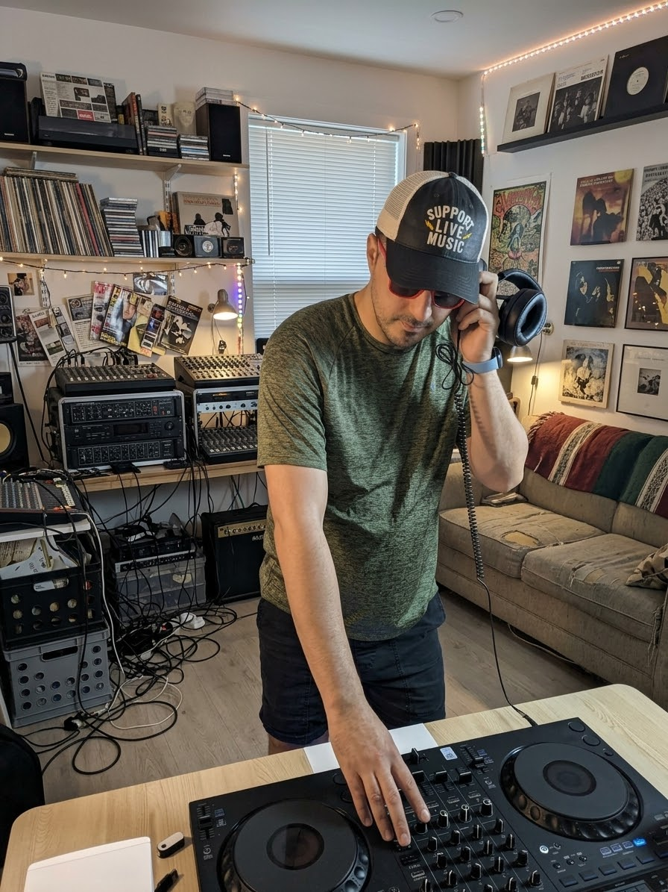

Outside of research and teaching, I DJ. I mix on a controller at home, dig through records, and support live music whenever I can.

I try to go to shows and support the artists and venues behind them. Nothing beats hearing music live.
Music made me curious about how the industry behind it is changing. Streaming, digital tools and online platforms have changed how music is made, shared and paid for. I see it every time I mix, and I wanted to study it properly.
So I have started a series of research papers on digital transformation in the music industry, together with two co-authors. We plan to submit the first paper by February 2027.